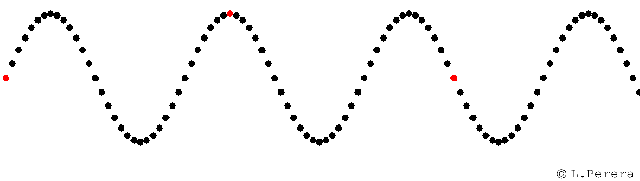

Beberapa fungsi sebuah mikrokontroler sebagai berikut
1) Sebagai counter
2) Sebagai decoder dan encoder
3) Sebagai flip – flop
4) Sebagai pembangkit osilasi
 5) Sebagai timer/pewaktu
5) Sebagai timer/pewaktu
Sama hal nya dengan mikroprosesor, mikrokontroler adalah dirancang untuk kebutuhan umum, fungsi utama dari mikrokontroler adalah mengontrol kerja mesin atau sistem menggunakan program yang disimpan dalam sebuah ROM, mikrokontroler merupakan komputer di dalam chip yang digunakan untuk mengontrol peralatan elektronik, yang menekankan efisiensi dan efektivitas biaya, mikrokontroler juga dapat disebut sebagai pengendali kecil, dimana sebuah sistem elektronik yang sebelumnya banyak memerlukan komponen – komponen pendukung seperti IC TTL dan CMOS dapat diperkecil, akhirnya terpusat serta dikendalikan oleh mikrokontroler ini.
Mikrokontroler digunakan dalam produk dan alat dikendalikan secara otomatis, seperti sistem kontrol mesin, remote control, mesin kantor, peralatan rumah tangga, alat berat, dan mainan. Adapun kelebihan kehadiran mikrokontroler sebagai berikut :
1) Membuat kontrol elektrik untuk berbagai proses menjadi lebih ekonomis
2) Sistem elektronik akan menjadi lebih ringkas
3) Rancang bangun sistem elektronik dapat dilakukan lebih cepat karena sebagian besar sistem merupakan perangkat lunak yang mudah di modifikasi
4) Gangguan yang terjadi lebih mudah ditelusuri karena sistemnya yang kompak